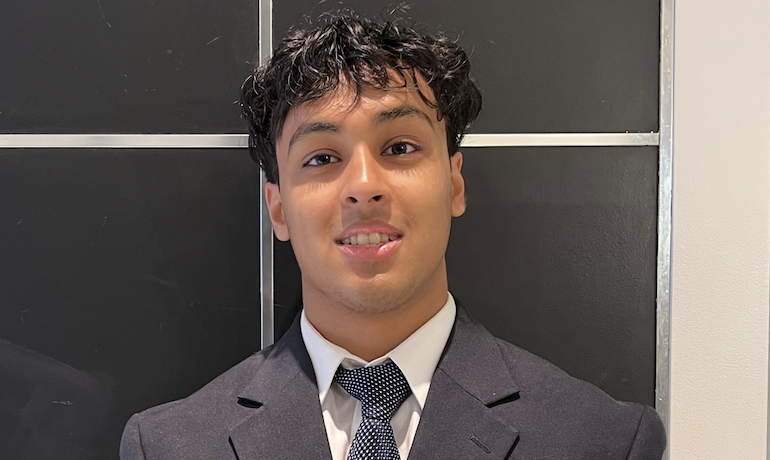
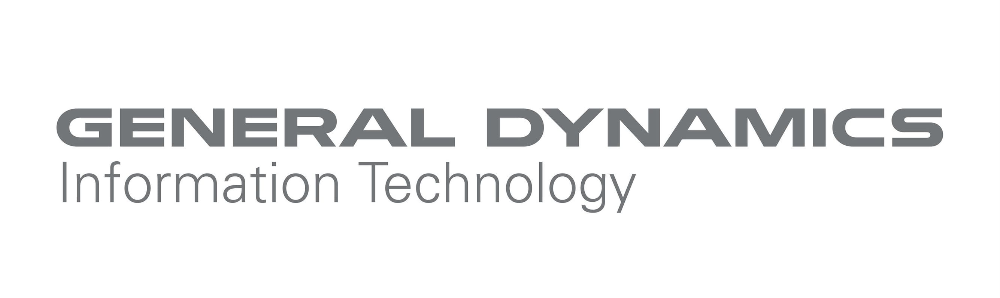
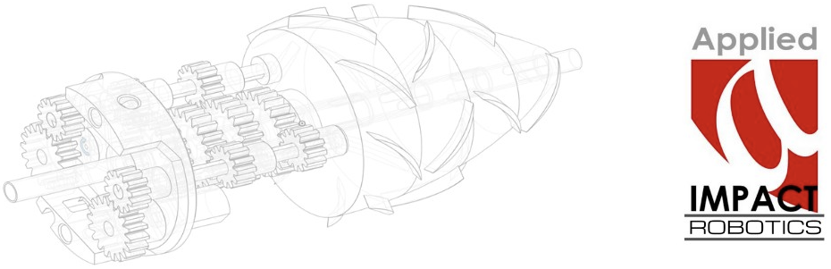

About

Hi, my name is Utkarsh Bansal and I am currently a student at Georgia Tech majoring in Computer Science under the Intelligence and Info Internetworks threads. Some of my coursework includes Discrete Mathematics, Data Structures + Algorithms, Linear Algebra, and Multivariable Calculus to name a few. My enthusiasm for technology is not just limited to academic pursuits; I actively engage in innovative research projects and have an avid interest in the fields of quantitative analysis, finance, and software engineering. Additionally, I am involved in a variety of activities both on and off-campus, such as the GT Student Investments Fund, Big Data Big Impact, Google Student Developer Club, and the GT Undergraduate Consulting Club. When I step away from the computer, you can find me enjoying various hobbies such as weightlifting, exploring new TV series, competing in basketball, and playing the guitar. Thanks for reading!
Experience

SDE Intern - General Dynamics IT (June 2024 - August 2024)
- Utilizing Python Powershell, VSCode, C++, Linux, and other programming languages & tools to develop client-facing products.
Data Intern - OCEUS Networks (June 2022 - August 2022)
- Collaborated with a team under the CTO to create a financial assets database.
- Utilized CSS for frontend and PHP & Linux for backend development.
- Accepted into the CCI Internship Program (~10% acceptance rate) for a 2-week virtual skills bootcamp. Gained extensive knowledge in programming and professional skills as well as placement at this partnering company.
- Attended over 20 seminars with experts in a variety of technological fields.
- Developed a cybersecurity activity for the Children's Science Center to foster interest in STEM amongst local younger students.

Technical Intern - Applied Impact Robotics (June 2021 - August 2021)
- Developed a commercially-applicable robotics solution to inspect oil tanks.
- Utilized sensory software and CAD to model parts for small-scale prototypes.
- Leveraged Excel and RVIZ to monitor prototype efficiency and other metrics.
Research/Projects
Undergraduate Research Assistant at Georgia Tech
- Currently engaged in a project with Dr. Kai James titled The Computational Analysis and Design of a Cross-Flow Heat Exchanger.
- Employing PyTorch, OpenFOAM, ParaView, C++, and Python-centric libraries to develop a CNN model within a supercomputing PACE Phoenix cluster for ML graphing and optimized simulations in thermal systems.
Blockchain Research Intern at Georgetown University
- Assisted Dr. Shin’ichiro Matsuo in researching the plausibility of Central Bank Digital Currencies in the U.S in advisement to the Blockchain Governance Initiative Network (BGIN).
- Invited to present the findings at multiple conferences and received a grant from the National Science Foundation (NSF).
- Conducted a second research project on the environmental impact of Bitcoin using Python-based web scraping and relevant libraries.
- Published the quantitative findings in the SSRN Academic Journal, where it ranked in the Top 10 of its category for 9 weeks.
- Read Publication Here.
Research Intern at George Mason University
- Collaborated with Dr. Sarah Wittman on quantitatively determining the impact of experiential learning styles within the education sector.
- Utilized statistical analysis tools and JavaScript within the collected datasets.
- Read Publication Here.
Activities
Georgia Tech Undergraduate Consulting Club (UCC)
Analyst Team Member
- Involved in a pro-bono project for an Atlanta-based blockchain startup, communicating directly with their C-Suite for strategic planning and market analysis in Fall 2023.
- Implemented Gen-AI strategies into the data centers ran by DC-BLOX, a data center company seeking to upgrade its existing services. Guided on infrastructure maintenance and management using novel ML strategies in Spring 2024.
Georgia Tech Investments Committee
Allocations Analyst
- Analyst responsible for the management and investment of the student endowment fund with $2M AUM. Gaining hands-on experience in financial management and investment strategies.
GT Big Data Big Impact
Project Developer
- Engaging in the development of data-centric projects, specifically using AWS Services and tools such as Docker to streamline student services offered at Georgia Tech into one interactive User Interface (UI).
The Disaster Awareness Group
Co-Founder
- Co-founded an environmental-media nonprofit aimed at raising awareness and monetary aid for natural disasters globally.
- Grew the organization to 85 active student volunteers nationwide and key partnerships with companies like HackX.
- Responsible for overseeing finances, 501(c)3 paperwork, and new directorial and partnership initiatives.
- Recipient of the George H.W. Bush Foundation's Points of Lights award and were featured by multiple news outlets.
Contact